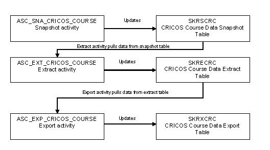

Australian CRICOS data
The Commonwealth Register of Institutions and Courses for Overseas Students (CRICOS) reports extract data that has been attached to Banner programs. Refer to Figure 7 for typical process flow for CRICOS Reporting.
Figure 1. Typical process flow for CRICOS Reporting
